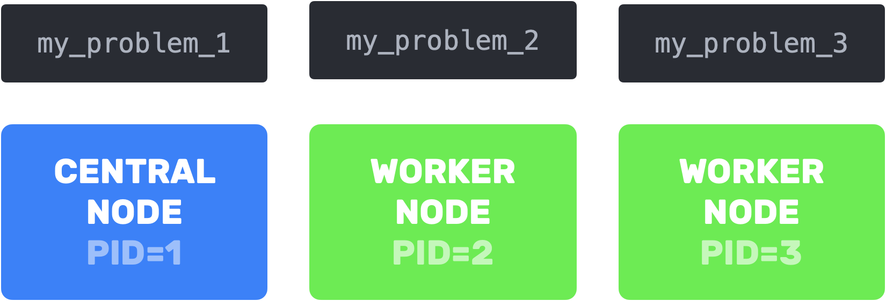

Manual
We saw how to run an asynchronous version of the SGD algorithm on a LRMSE problem in quick start. Here we'll use this same example to look at the following:
- Working with a distributed problem
- Synchronous run
- Active processes
- Recording iterates
- Custom stopping criterion
startvsstart!- Handling worker failures
- Algorithm templates
Working with a distributed problem
Suppose you have a make_problem function
# Note: In this example we sample `A` and `b`.
# In practice, we could read them from a file or any other source.
@everywhere function make_problem(pid)
pid==1 && return nothing # for now, let's assign process 1 an empty problem
LRMSE(rand(pid,10),rand(pid)) # the sample size is `m` is set to `pid` for demonstration purposes only
endWhen instanciating your problems you might have three requirement:
- Limiting comunication costs and avoiding duplicated memory: loading problems directly on their assigned processes is be preferable to loading them central node before sending them to their respective processes
- Persistant data: necessary if you want to reuse problems for multiple experiments (you don't want your problems to be stuck on remote processes in
start's local scope)
Depending on your needs, you have three options to construct your problems:
# Option 1: Instantiate the problems remotely
problem_constructor = make_problem
# Option 2: Instantiate the problems on the central node and send them to their respective processes
problems = Dict(procs() .=> make_problem.(procs()));
problem_constructor = (pid) -> problems[pid]
# Option 3: Create a `DistributedObject` that references a problem on each process.
@everywhere using DistributedObjects
distributed_problem = DistributedObject((pid) -> make_problem(pid), pids=procs())Option 3 uses
DistributedObjects. In a nutshell, aDistributedObjectinstance references at most one object per process, and you can access the object stored on the current process with[]
| communication costs & duplicated memory | single use objectives | ||
|---|---|---|---|
| Option 1 | ❌ |  | |
| Option 2 | ❌ |  | |
| Option 3 |  |
As previously noted, Option 2 should be avoided when working with large data. However, it does offer the advantage of preserving access to problems, which is not possible with Option 1. This opens up the possibility of reconstructing the global problem.
# reconstructing global problem from problems storred locally
function LRMSE(problems::Dict)
pids = [pid for pid in keys(problems) if pid ≠ 1]
n = problems[pids[1]].n
m = sum([problems[pid].m for pid in pids])
L = sum([problems[pid].L for pid in pids])
∇f(x) = sum([problems[pid].∇f(x) * problems[pid].m for pid in pids]) / m
return LRMSE(nothing,nothing,n,m,L,∇f)
end
problems[1] = LRMSE(problems);
# We now have access to the global Lipschitz constant!
sgd = SGD(1/problems[1].L)Option 3 is the best of both worlds:
# reconstructing global problem from problems storred remotely
function LRMSE(d::DistributedObject)
pids = [pid for pid in where(d) if pid ≠ 1]
n = fetch(@spawnat pids[1] d[].n)
m = sum(fetch.([@spawnat pid d[].m for pid in pids]))
L = sum(fetch.([@spawnat pid d[].L for pid in pids]))
∇f(x) = sum(fetch.([@spawnat pid d[].∇f(x) * d[].m for pid in pids])) / m
return LRMSE(nothing,nothing,n,m,L,∇f)
end
distributed_problem[] = LRMSE(distributed_problem);
# We also have access to the global Lipschitz constant!
sgd = SGD(1/distributed_problem[].L)It's worth mentioning that instead of problem_constructor::Function, distributed_problem::DistributedObject can be passed to start. Both of the following are equivalent:
history = start(sgd, (pid)-> distributed_problem[], stopat)
history = start(sgd, distributed_problem, stopat);Synchronous run
If you want to run your algorithm synchronously you just have to define the synchronous central step performed by the central node when receiving a answers as::Vector{A} from all the workers...
@everywhere begin
# synchronous central step
(sgd::SGD)(as::Vector{Vector{Float64}}, workers::Vector{Int64}, problem::Any) = sum(as)
end...and to add the synchronous=true keyword to start
history = start(sgd, distributed_problem, stopat; synchronous=true);Active processes
You can chose which processes are active with the pids keyword
history = start(sgd, problem_constructor, stopat; pids=[2,3,6]);If pids=[1], a non-distributed (and necessarily synchronous) version of your algorithm will be started.
history = start(sgd, (pid)->LRMSE(rand(42,10),rand(42)), stopat; pids=[1], synchronous=true);Recording iterates
The queries::Q sent by the central node are saved at intervals specified by saveat=(iterations, epochs).
history = start(sgd, distributed_problem, stopat; saveat=(10,0));To also save the workers' answers::A, simply add the save_answers=true keyword.
history = start(sgd, distributed_problem, stopat; saveat=(10,0), save_answers=true);Custom stopping criterion
To augment the default stopat=(iteration, epoch, time) with an additional stopping criterion, follow these steps:
- Define a new method
AsynchronousIterativeAlgorithms.stopnowto be dispatched when called on your algorithm. - Declare that your algorithm implements the
Stoppabletrait.
As an example, let's modify the SGD example to include a precision criterion.
@everywhere begin
using LinearAlgebra
mutable struct CustomSGD<:AbstractAlgorithm{Vector{Float64},Vector{Float64}}
stepsize::Float64
previous_q::Vector{Float64}
gap::Float64 # will hold the distance between the last two iterates
precision::Float64
CustomSGD(stepsize::Float64, precision) = new(stepsize, Vector{Float64}(), 10^6, precision)
end
function (sgd::CustomSGD)(problem::Any)
sgd.previous_q = rand(problem.n)
end
function (sgd::CustomSGD)(q::Vector{Float64}, problem::Any)
sgd.stepsize * problem.∇f(q, rand(1:problem.m))
end
function (sgd::CustomSGD)(a::Vector{Float64}, worker::Int64, problem::Any)
q = sgd.previous_q - a
sgd.gap = norm(q-sgd.previous_q)
sgd.previous_q = q
end
# Stop when gap is small enough
AIA.stopnow(sgd::CustomSGD) = sgd.gap ≤ sgd.precision
AIA.Stoppability(::CustomSGD) = Stoppable()
end
history = start(CustomSGD(0.01, 0.1), distributed_problem, (10,0,0.));This was only meant to be an example as in practice you can specify a precision threshold by passing a fourth value in
stopat. To use a custom distance function instead of the default(x,y)->norm(x-y), provide the desired function through thedistancekeyword ofstart.
history = start(CustomSGD(0.01, 0.1), distributed_problem, (10,0,0.,0.1); distance=(x,y)->norm(x-y,1));start vs start!
start uses a deep copy of your algorithm and won't modify it. To enable modifications (e.g. to record information during the execution), use start!.
Handling worker failures
If you expect some workers to fail but still want the algorithm to continue running, you can set the resilience parameter to the maximum number of worker failures you can tolerate before the execution is terminated.
Algorithm templates
You are free to create your own algorithms, but if you're interested in aggregation algorithms, you can use an implementation provided in this library. The iteration of such an algorithm performs the following computation:
\[q_j \longleftarrow \textrm{query}(\underset{i \in \textrm{connected}}{\textrm{aggregate}}(a_j))\ \ \textrm{where }\ \ a_i = \textrm{answer}(q_i)\]
where $q_j$ is computed by the worker upon reception of $\textrm{answer}(q_i)$ from worker $j$ and where $connected$ are the list of workers that have answered.
The AggregationAlgorithm in this library requires you to specify three methods: query, answer, and aggregate. Here's an example showing the required signatures of these three methods:
@everywhere begin
using Statistics
function agg_gd(q0, stepsize)
initialize(problem::Any) = q0
aggregate(a::Vector{Vector{Float64}}, connected::Vector{Int64}) = mean(a)
query(a::Vector{Float64}, problem::Any) = a
answer(q::Vector{Float64}, problem::Any) = q - stepsize * problem.∇f(q)
AggregationAlgorithm{Vector{Float64}, Vector{Float64}}(initialize, aggregate, query, answer; pids=workers())
end
end
history = start(agg_gd(rand(10), 0.01), distributed_problem, (1000,0,0.));Memory limitation: At any point in time, the central worker should have access must have access to the latest answers $a_i$ from all the connected workers. This means storing a lot of $a_i$ if we use many workers. There is a workaround when the aggregation operation is an average. In this case only the equivalent of one answer needs to be saved on the central node, regardless of the number of workers.
AveragingAlgorithm implements this memory optimization. Here you only need to define query, the answer
@everywhere begin
# If you want the average to be weighted, you can add the keywords pids with their corresponding weights
function avg_gd(q0, stepsize, pids=workers(), weights=ones(nworkers()))
initialize(problem::Any) = q0
query(a::Vector{Float64}, problem::Any) = a
answer(q::Vector{Float64}, problem::Any) = q - stepsize * problem.∇f(q)
AveragingAlgorithm{Vector{Float64}, Vector{Float64}}(initialize, query, answer; pids=pids, weights=weights)
end
end
history = start(avg_gd(rand(10), 0.01), distributed_problem, (1000,0,0.));Hope you find this library helpful and look forward to seeing how you put it to use!